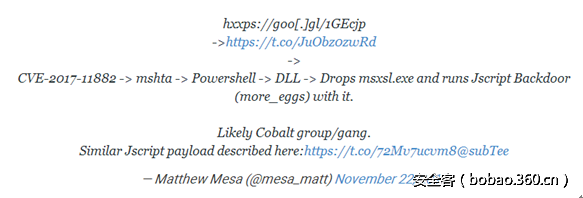

前言
一周前，微软Office“公式编辑器”中的漏洞被公之于众，而现在至少有一个犯罪组织正在利用它感染用户计算机。这个黑客组织是Cobalt，两年来一直针对银行、ATM网络和金融机构发动针对性攻击。
CVE-2017-11882遭Cobalt黑客组织利用
英国网络安全公司Reversing Labs表示，Cobalt组织正在将带有CVE-2017-11882漏洞利用代码的RTF文档传播到高价值目标中。CVE-2017-11882即Office“公式编辑器”组件漏洞，它能让攻击者在无需用户交互的前提下在受害者计算机中执行代码。这个漏洞对于网络犯罪组织来说价值极高。
Cobalt对这个漏洞能如此快速的利用可能是因为上周网络上公布了四个此漏洞的PoC。Reversing Labs指出，Cobalt黑客组织目前正在发送恶意RTF文件，它会利用CVE-2017-11882漏洞来下载并运行其它恶意文件。这个感染链会经历多个步骤，不过最后都会下载并加载尚未来得及深入分析的一个恶意DLL文件。
Proofpoint公司的研究员Matthew Mesa也注意到了同样的恶意邮件，不过和目前传播的样本有着稍不同的利用链。

Cobalt此前曾利用过微软漏洞
Cobalt组织此前在发现微软漏洞后会立即应用到攻击活动中。例如CVE-2017-8759就是如此。它是一个远程代码执行漏洞，影响 .NET 框架，由微软在2017年9月的“补丁日”中修复。
安全公司首次在2016年发现Cobalt黑客组织的存在，当时它正在针对欧洲的ATM机和金融机构发动攻击。随后该组织针对美洲、俄罗斯银行发动攻击。它将前苏联的地盘作为新攻击的试验地，然后转向价值更高的地方。
Cobalt组织最为臭名昭著的恶意软件家族是Cobalt Strike，它与一个商业渗透测试软件同名，因为它使用了这款软件中的一些组件。
用户应立即修复补丁
历史证明，一旦PoC公布，漏洞通过专业的网络犯罪组织传播成为僵尸网络的速度很快。用户应立即更新微软在11月“补丁日”中推出的KB2553204、KB3162047、KB4011276和KB4011262补丁以防止CVE-2017-11882遭黑客利用。
京ICP证080047号[京ICP备08010314号-6]
文网文[2009]024号 新出网证（京）字069号 工商营业执照
 11000002000006号
11000002000006号